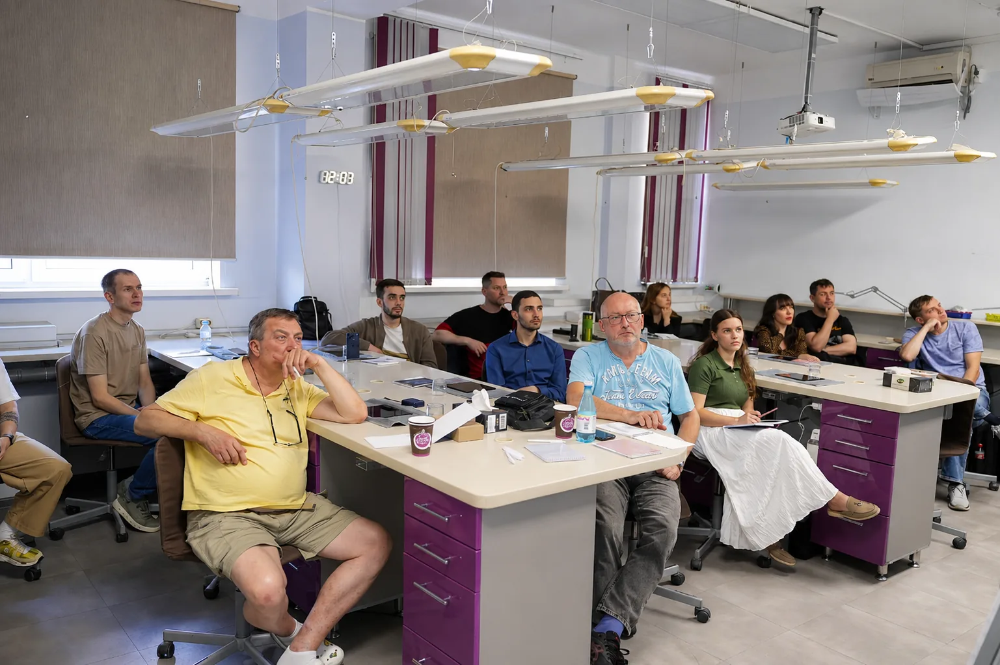
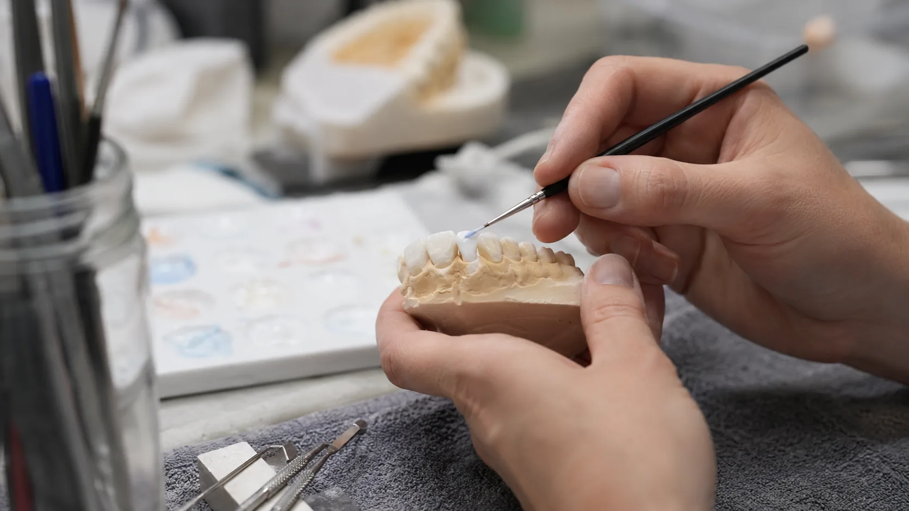

Задача
Что нужно изменить, улучшить или запустить в работе.

Материалы и технологии
dpb объединяет материалы, оборудование и цифровые технологии — чтобы увидеть их в работе и подобрать под задачу клиники или лаборатории.
Обсудить задачуУчитесь. Пробуйте. Внедряйте.
Подход dpb
Материал, оборудование или цифровой инструмент не работают изолированно. Важно понимать, какую задачу они решают, с чем должны быть совместимы и как встроятся в существующий рабочий процесс.
Что нужно изменить, улучшить или запустить в работе.
С какими материалами, оборудованием и цифровыми процессами должно работать решение.
Где можно увидеть технологию в работе, познакомиться с протоколом или пройти связанное обучение.
Партнёры
Материалы, оборудование и цифровые технологии партнёров dpb для работы клиники и зуботехнической лаборатории.
Оборудование, материалы и цифровые системы для стоматологических клиник и зуботехнических лабораторий: от оснащения рабочих мест до CAD/CAM-решений и сервисного сопровождения.
Смотреть продукциюКерамика, цирконий и CAD/CAM-материалы для изготовления, характеризации и индивидуализации эстетических реставраций.
Смотреть продукцию3D-сканеры, 3D-принтеры и оборудование для получения цифровых моделей и производства физических объектов.
Смотреть продукциюПрофессиональное оборудование для зуботехнических лабораторий: аспирационные системы, печи и решения для организации лабораторных рабочих процессов.
Смотреть продукциюМатериалы и оборудование для цифровой зуботехнической лаборатории: цирконий, фрезерные системы, сканирование, спекание и 3D-печать.
Смотреть продукциюМатериалы для зуботехнических процессов: синтетические гипсы, паковочные массы, специальные жидкости, сплавы и материалы для дублирования.
Смотреть продукциюФотополимерные материалы для стоматологической 3D-печати: модели, временные конструкции, хирургические шаблоны, литейные модели и имитация мягких тканей.
Смотреть продукциюСистемы цифровой стоматологии для клиники и лаборатории: внутриротовые и лабораторные сканеры, CAD-программное обеспечение и инструменты цифрового взаимодействия врача и техника.
Смотреть продукциюМатериалы для эстетических реставраций и цифрового производства: дисиликат лития, стеклокерамика и циркониевые материалы.
Смотреть продукциюОборудование и материалы для стоматологической 3D-печати: принтеры, специализированные смолы, системы постобработки и программное обеспечение.
Смотреть продукциюОборудование и материалы для цифровой лаборатории: фрезерные системы, циркониевые диски, стеклокерамика и инструменты для обработки.
Смотреть продукциюМатериалы для эстетической индивидуализации керамических реставраций: системы MiYO и InSync, глазури, красители и инструменты.
Смотреть продукциюМатериалы для эндодонтии и реставрационной стоматологии: биокерамика, адгезивные системы, композиты и стоматологические цементы.
Смотреть продукциюЗуботехнические реставрации и конструкции: виниры, коронки, вкладки, работы на имплантах, хирургические шаблоны и каппы.
Смотреть продукциюПрофессиональная стоматологическая литература и образовательные материалы: книги, журналы, клинические публикации и специализированная онлайн-библиотека.
ПодробнееОт профессиональной задачи — к внедрению
Сначала определяем, что именно нужно специалисту, клинике или лаборатории: новый материал, оборудование, цифровой этап или полноценная рабочая система.
Уточняем используемые материалы, оборудование, программное обеспечение и ограничения, которые могут повлиять на совместимость.
Если технология используется в лаборатории или образовательной программе dpb, её можно увидеть в рабочем контексте и понять логику применения.
После уточнения задачи координатор проверяет подходящие решения, комплектацию и актуальные условия поставки.
Практика и среда
Обучение
На курсе материал или технология становятся частью полного рабочего протокола — от понимания принципа до практического применения.
Смотреть курсы
Лаборатория
Оборудование, материалы и цифровые технологии можно рассматривать в контексте реального зуботехнического процесса и взаимодействия врача с техником.
Открыть лабораторию
Связаться с dpb
Расскажите о задаче — координатор dpb свяжется с вами, ответит на вопросы и поможет определить следующий шаг.